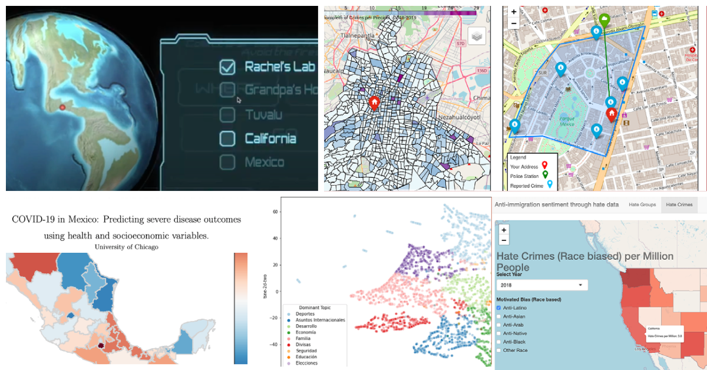

ABOUT ME
I'm currently studying data science and public policy in the Computational Analysis and Public Policy master's program at the Univerity of Chicago.
(Thanks to the support of CONACYT, P.E.O. International, FUNED, Harris School of Public Policy UChicago)
My current interests are the applications of data science that aim to address social issues such as social inequality gaps, crime prevention, government transparency.
Previously, I was an economist in the Central Bank of Mexico doing monetary policy research. Here's my full CV.

PROJECTS
- COVID-19 in Mexico: Predicting severe disease outcomes using health and socioeconomic variables.
- To join the efforts to fight COVID-19, along with Roberto Barroso, Steph Ramos and Oscar Noriega, I studied and predicted severe disease outcomes for COVID-19 patients in Mexico . The predictions were useful in developing a relative risk index between Mexican states.
- Understanding the Anti-immigration sentiment in the U.S. with hate-crime data
- Given the rise in anti-immigrant sentiment in recent years, I analyze the evolution of hate groups and crimes against the immigrant community in the United States. In this analysis, I was able to identify risk regions characterized by a greater number of groups or hate crimes per million population. Also, I developed a simple Shiny dashboard to represent this data.
- Climate Change Educational Game
- Through Unity and #C, Kelsey Anderson and I built an Educational video game about Climate Change for 10 to 12 year olds. The goal is to provide the children with an understanding of how their behaviors in daily life relate to the global environment.
- Mapping Crimes at a Certain Day and hour with Mexico City Crime Data (Using DJANGO and SQLITE)
- Motivated by the growing crime incidence in Mexico City (CDMX), this web-app aims to provide the user information on the number of crimes that happened at an specified place, day of the week, and hour, with the purpose of the user potentially taking certain precautions when going to a specified area given that time and day of the week.